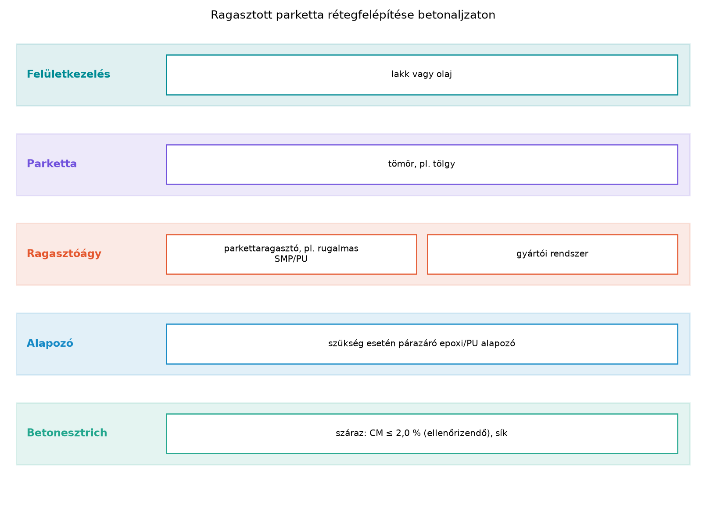

Egy megrendelő új lakásába tölgyfa parkettát szeretne, a falra pedig lambériát kér. A padló a leginkább igénybe vett felület: napi több ezer lépés, széktologatás, felmosás, beeső napfény. Ha rossz típusú padlót választunk, rossz aljzatra fektetjük, vagy nem számolunk a fa mozgásával, a drága alapanyag vetemedni, nyikorogni fog, és a vevő reklamálni fog. Ebben az alfejezetben a padlók, parketták és lambériák szerkezetét, gyártását, lerakását és a szükséges anyagmennyiség kiszámítását tanuljuk meg.
Képzelj el egy metszetet a padlóról lentről felfelé. Alul van a teherhordó födém, felette az aljzat (például betonesztrich). Ragasztott fektetésnél az aljzatot alapozzuk (nedvesség ellen párazáró alapozóval), és erre visszük fel a ragasztóágyat; úsztatott fektetésnél párazáró fóliát és alátétet terítünk (ellenőrizendő: ragasztógyártói rendszerleírás). Erre kerül a parketta vagy lambéria (falburkolatnál a falra váz vagy közvetlenül a falazatra). A felületet végül lakkal vagy olajjal zárjuk le.

A fa padló nem csak szép, hanem meleg tapintatú és felújítható. Ezért a vevő hajlandó érte többet fizetni, de csak akkor, ha a fektetés szakszerű.
Definíció. A parketta olyan, szabványos vagy gyártói méretű, fából vagy faalapú anyagból készült padlóelem, amelyet aljzatra fektetnek és ott rögzítenek (ragasztással, szegzéssel vagy úsztatva) vagy szabályos ismétlődő elemként szőnyegpadlószerűen fektetnek le. A parketta alapeleme a léc, amely lehet tömörfa, többrétegű vagy mozaik. A lambéria olyan hornyolt-csapos (nút-federes) profilozott deszka, amelyet elsősorban fal- és mennyezetburkolatként használnak.
Padlószerkezetek csoportosítása: - Tömörfa hajópadló: hosszú, csaphornyos (nút-federes) tömör deszkák, párnafára rejtett szegezéssel (a szeg a csap felett ferdén megy be) (ellenőrizendő: szakkönyv). Előnye a hosszú élettartam és a sokszori csiszolhatóság, hátránya a nedvességre való nagyobb érzékenység. - Csaphornyos parketta: tömör vagy többrétegű léc, amelynek hossz- és gyakran keresztoldalán is csap és horony (nút-feder) van. Ez a profil biztosítja az elemek egymásba illesztését és a padló együttdolgozását. - Mozaikparketta: kisméretű, gyakran rostirányban nehezen meghatározható, hálóra kasírozott tömörfa lamellákból álló táblák. Jellemzően sakktáblaszerűen, ragasztva fektetik le. Előnye az alacsonyabb ár és a nagyobb mintázati rugalmasság. - Többrétegű parketta (szalagparketta): 2-3 rétegből, egymásra merőleges rostiránnyal felépített padlóléc. Felső rétege (ún. használati réteg) értékes keményfa, alul gyakran fenyő, nyár vagy HDF. A keresztrétegek miatt méretstabil, ezért úsztatott fektetésre és padlófűtéshez is jól használható. - Lambéria: jellemzően fenyő (lucfenyő, erdeifenyő) vagy kemény lombos fából készül. Készülhet tömör fából, rétegelt falappal kombinálva. A gyakori profilok: normál (V-hornyos), svéd (lekerekített élű, rejtett szegezésű) és lapos (hézagos) profil; ezek pácolt vagy festett kivitelben is kaphatók.
A keresztmetszeteken látszik a különbség: a hajópadló és a tömör parketta egyetlen tömör fadarab csappal és horonnyal, a háromrétegű parkettában a szomszédos rétegek rostiránya merőleges (ez adja a méretstabilitást), a click-elemet ferdén beakasztjuk, majd lenyomva bepattintjuk.
Szabvány. A fa padlóburkolatok (tömörfa, többrétegű, mozaik) méretpontosságát, profiljait és vizsgálatait európai termékszabványok írják le. A pontos jelzetet (pl. MSZ EN 13226, MSZ EN 13629, MSZ EN 13489, MSZ EN 13488) a gyártói adatlap és a vonatkozó európai szabványjegyzék alapján kell ellenőrizni (ellenőrizendő).
A parketta és lambéria előállítása a fűrészáru gépbe tételével kezdődik. A műhelyben a közös profilt nút-feder-nek hívjuk (az asztalos műhelyi szóval: hornyot-csapot).
Technológiai lépések: 1. Szárítás: A fűrészárut a felhasználási helynek megfelelő nedvességtartalomra szárítják. Tömörfa fűtött beltéri padlóhoz 8–11% nedvességtartalom ajánlott (ellenőrizendő: gyártói előírás). 2. Darabolás: A léceket adott hosszra szabják, a hibákat kifűrészelik. 3. Egyengetés és vastagsági gyalulás: A léceket derékszögbe és egységes vastagságra gyalulják. Ez adja a pontos vastagságot. 4. Profilmarás: A hossz- és keresztoldalt profilozó marógépen munkálják meg. Itt alakítják ki a csapot, a hornyot, illetve a falcot és a profilos élt. A marási mélység és szerszámpozíció kritikus: ha a horony mély, a felület illesztése laza; ha sekély, az anyag behasadozik. 5. Csiszolás: A gyártósorok gépi csiszolást végeznek, hogy a fektetés után már csak finom átcsiszolás legyen szükséges. 6. Minőségosztályozás: A kész parkettát a felső rétegen látható hibák (göcs, szijács, repedés) és méretpontosság alapján osztályozzák.
Lambéria gyártásánál különösen fontos a hátoldal szellőzése. A lambéria hátoldalát gyakran gyengébb minőségű, sima felületűre hagyják, de hornyokat (szellőző nutokat) is marhatnak bele.
Gépbiztonság. A gyaluló- és profilozó gépek nagy fordulatszámú, éles szerszámokkal dolgoznak. A műveletet betanított, felügyelt tanuló végezheti. A gépek burkolata, a védőburkolat és az elszívás működése kötelező. A forgó szerszámot kézzel, kesztyűvel, védőburkolat kinyitásával megérinteni szigorúan tilos.
A padló fektetése előtt az aljzatot ellenőrizni kell. Az aljzat lehet beton, esztrich, faforgácslap vagy régi deszkapadló.
Aljzat nedvessége. A leggyakoribb hiba, amikor a fát friss, még nedves betonra rakják. A beton a benne lévő vizet lassan adja le, a fa felveszi, és megduzzad, később zsugorodik.
Fektetési módok - Ragasztott fektetés: A parkettát teljes felületén rugalmas (elaszto) vagy PVAc-alapú parkettaragasztóval ragasztjuk az aljzatra. Ez a mód a legstabilabb, de a munkabér drágább. Tömör, több mint 15 mm vastag parkettához általában ragasszuk. - Úsztatott fektetés: A parkettát nem ragasztjuk az aljzatra, csak egymáshoz (csappal-horonnyal, gyakran ragasztva vagy click-rendszerrel). A padló alá vékony PVC vagy XPS alátét fóliát terítünk. A többrétegű és click-parkettához ez a leggyakoribb. A fa itt együtt mozog, nem púposodik fel. - Szegezett vagy csavarozott: Régi fapadlókra vagy párnafákra a csap felett, ferdén, rejtetten (a horony alján keresztül) rögzítünk. Faaljzaton ez jól működik.
Lambéria felrakása (fali burkolatként). Először vázléceket (pl. 24 × 48 mm-es fenyőléceket, ellenőrizendő) rögzítünk a falra, a lambériára merőlegesen, kb. 40–60 cm-es osztással; a vázléc szélezi az egyenetlenségeket, és a lambéria mögött légrést ad. A lambériát a csap (feder) felett ferdén, rejtett szegezéssel vagy lambériakapoccsal rögzítjük a vázlécekhez, a horony mindig lefelé nézzen vagy a víz ne gyűljön benne. A padló és a mennyezet mentén 8–10 mm mozgási hézagot hagyunk (ellenőrizendő: gyártói utasítás), amelyet a lábazati vagy a fedőléc takar. A vázléc alsó és felső részén szellőzőnyílást hagyunk, hogy a lambéria mögött ne álljon meg a nedves levegő. A vázléc-osztás és a lambéria mennyiségének számítását lásd a 40.4 alfejezetben.
Dilatáció. A fa mozog, ezért a fal mellett hézagot kell hagyni. Ezt dilatációs hézagnak nevezzük. A rést a falnál nem szabad betömni, hanem az aljzat szélére parafa vagy PVC távtartó ékeket teszünk. A kész padló és a fal között 8–15 mm hézag maradjon (ellenőrizendő: a gyártói utasítás, mert a méret a terméktől és a fafajtól függ). Nagyobb, 8 m-nél hosszabb egybefüggő felületnél ajtónyílásokban és szűkületben a padlót meg kell szakítani, és átmeneti vagy dilatációs profilt kell használni.
A két metszet a falnál hagyott 10 mm-es dilatációs hézagot mutatja (a fejezet 8–15 mm-es tartományából, ellenőrizendő: gyártói utasítás). A hézagba fektetéskor éket teszünk, amelyet utána eltávolítunk; a lábazati lécet a falhoz rögzítjük, nem a padlóhoz, így a parketta alatta szabadon mozoghat. Ragasztott fektetésnél nincs fólia, úsztatottnál a PE fóliát a falra felhajtjuk. Az interaktív változat lépésenként mutatja, hogy hézaggal a táguló parketta a léc alá mozdul, hézag nélkül felpúposodik.
Csiszolás. Ha a lerakott padló tömörfa, a ragasztó megszáradása után a felületet át kell csiszolni. A szalagcsiszolót rostirányban használjuk. A csiszolási sor: 40-es (kiegyengetés), majd 80-as, végül 120-as szemcse. A fal melletti széleket és sarkokat élcsiszolóval vagy excenter csiszolóval érhetjük el.
Felületkezelés. A padlóra két fő anyagrendszert hordanak fel: - Lakk: Fóliát képez a fán. A vízbázisú padlólakkok alacsonyabb VOC-tartalmúak, gyorsan száradnak, de karcérzékenyebbek. Az oldószeres PU vagy oldószeres akril lakk keményebb, de erős szagú. Felhordás előtt alapozás ajánlott. A rétegek közt 120-as finomságú papírral csiszoljunk át. - Olaj: Beivódik a fába, nem képez fóliát. A felület természetesebb, melegebb tapintású, de a kopásnak kevésbé ellenáll. A felújításkor nem kell az egészet lecsiszolni, helyileg is javítható.
Munkavédelem. A padlócsiszolás porképző munka. Mindig használjunk elszívással szerelt gépet és FFP2/FFP3 porvédő maszkot. A lakkok és olajok oldószergőzei miatt a helyiséget intenzíven szellőztetni kell.
A padlóburkolatnál a vágási veszteséget mindig hozzá kell számolni. A lerakott felület nem egyenlő a megvásárolandó felülettel.
Összefüggés. A szükséges bruttó anyagmennyiség:
ahol a megrendelendő anyag területe (m²), a tényleges lerakandó padlófelület (m²), a vágási és illesztési veszteség tizedes törtben (pl. 8% = 0,08).
Tömör és profilozott parkettánál 5–10% veszteséggel számolunk. Mozaik és keresztirányú fektetésnél, vagy ferde (45°-os) ragasztásnál a veszteség akár 12–15% is lehet (ellenőrizendő: gyártói kalkulációs előírás).
Számítás. Egy téglalap alakú szobát tölgy hajópadlóval borítunk. A szoba hossza 5,40 m, szélessége 4,20 m. A fektetés módja hagyományos, 8% vágási veszteséggel számolunk. Mennyi parkettát rendeljünk?
Kalkuláció. Egy 20 m²-es szoba úsztatott, többrétegű parkettával való bekerülési kalkulációját nézzük meg mintaárral.
| Tétel | Mennyiség | Egység | Egységár (Ft) | Érték (Ft) |
|---|---|---|---|---|
| Többrétegű parketta | 22 | m² | 12 500 | 275 000 |
| Alátét fólia | 21 | m² | 350 | 7 350 |
| Párazáró fólia | 22 | m² | 250 | 5 500 |
| Dilatációs ékek | 1 | készlet | 1 500 | 1 500 |
| Lábazati léc | 19 | fm | 1 800 | 34 200 |
| Ragasztó (lábazathoz) | 1 | db | 3 000 | 3 000 |
| Szegélyprofil | 1 | db | 1 200 | 1 200 |
| Közvetlen bérköltség | 8 | óra | 6 500 | 52 000 |
| Összesen (nettó) | 379 750 |
A mintaárak tájékoztató jellegűek, a tényleges beszerzési árat a gyártói árlista határozza meg. A vevő tényleges költsége az árrés és a kiszállás függvénye.
Cél: 22 m² többrétegű parketta úsztatott, hézagmentes fektetése száraz betonaljzatra.
Anyagok: többrétegű parketta, PE alátét fólia, párazáró fólia, dilatációs ékek, parkettaragasztó (a hosszirányú nút-feder ragasztásához, ha a gyártó úgy írja elő).
Szerszámok, gépek: dekopírfűrész vagy parkettavágó, szögmérő, mérőszalag, kalapács, ütőfa, vonalzó.
Gépbiztonság. A művelet betanított, felügyelt tanulónak szól; védőberendezés nélkül, egyedül, fáradtan ne végezd. A dekopírfűrésznél a vágás előtt várjuk meg, amíg a fűrészlap felveszi a teljes fordulatszámot. A fapor miatt használj elszívást és FFP2 maszkot.
Lépések: 1. Tisztítás. A betonfelületet porszívóval alaposan tisztítsuk meg. Az apró szemcsék később recsegő hangot okozhatnak. (Ellenőrzés: a felület észrevehető pormentes) 2. Aljzatellenőrzés. Nedvességmérővel és 2 m-es vonalzóval ellenőrizzük a nedvességet és a síkeltérést. Ha a beton nedves, tilos lerakni a padlót. (Ellenőrzés: 2%-nál alacsonyabb nedvesség) 3. Párazáró fólia fektetés. A fóliát 10–15 cm-es átlapolással fektetjük, a toldást ragasztószalaggal zárjuk. A falra 5 cm-t felhajtunk. (Ellenőrzés: nincs szakadás) 4. Alátét fólia fektetés. A PE habfóliát a falra is felvezetjük, hézagmentesen illesztjük. (Ellenőrzés: a fólia nem gyűrődik fel) 5. Első sor indítása. A falhoz 10 mm-es ékeket teszünk. Az első sort a fal mellé, horonnyal a fal felé indulva fektetjük. (Ellenőrzés: a sor egyenes, csap a szoba közepe felé néz) 6. Ragasztás. Ha a gyártó nem click-rendszert ad, a horonyba vékonyan, egyenletesen ragasztót viszünk fel, majd a következő sort beütjük. A kinyomódott ragasztót azonnal le kell törölni. (Ellenőrzés: a felület nem ragad) 7. Vágások. A sor végét méretre vágjuk, a leeső darab a következő sor elejére kerülhet, ha legalább 40–50 cm. A sorokat eltolt illesztéssel (kötésben) fektetjük. (Ellenőrzés: legalább 40 cm-es toldás) 8. Dilatáció megtartása. A fektetés során az ékek a falnál maradnak. Csak a padló készen léte után vesszük ki őket. (Ellenőrzés: a hézag mindenhol 8–15 mm) 9. Felületletisztítás. A kész padlót tiszta, nedves ruhával áttöröljük.
| Tünet / Hiba | Ok | Helyes gyakorlat |
|---|---|---|
| A parketta felpúposodik, kinyomja a falat | A falhoz túl szoros a fektetés, nincs dilatáció | Mindig tartsunk 8–15 mm-es rést, azt lábazattal takarjuk |
| A padló recseg, roppan | Az aljzat nem volt sík; a ragasztó megrepedt; a csap-horony ragasztása nem kötött | Az aljzatot ellenőrizni kell; a csapokat egyenletesen kell ragasztani |
| A lakk lepattogzik a parkettáról | Túl vastag lakkréteg; nem megfelelő előkészítés | A gyártói előírás szerinti rétegvastagságot és alapozót kell használni |
| A padló „csíkos” lett | A szalagcsiszolóval túl durva szemcsét használtunk, vagy a gépet nem rostirányban húztuk | Mindig rostirányban csiszoljunk, fokozatosan finomítsuk a papírt (40→120) |
Egy kivitelező egy társasházi lakásba tömör tölgy parkettát fektetett. A megrendelő sürgette a munkát, mert a bútorok már jöttek. Az esztrich enyhe párája miatt a kivitelező egy gyorsmérőt használt, de az tévesen alacsony értéket mutatott. A ragasztás után négy héttel a padló a nappaliban felpúposodott. A felmérés kimutatta, hogy az aljzat nedvességtartalma a lerakáskor 3,5% volt. A tanulság: a nedvességmérést hitelesített készülékkel, több ponton kell végezni, és a gyártói határérték felett soha nem szabad a fát lerakni.
Megoldások az önellenőrzéshez:
1. feladat (A)
Soroljon fel három padló-csiszolási lépést, és indokolja a
sorrendet.
2. feladat (A)
Miért kell feltétlenül alátét fólia az úsztatott fektetésnél?
3. feladat (B)
Egy 3,20 × 4,60 m-es szobába 1,5 m²-es csomagolású parkettát vásárolunk.
7% veszteséggel számolva hány csomagot kell venni?
4. feladat (B)
Két parketta típust kapunk leírásra. (1) tömör fa, vastag, ragasztandó.
(2) három réteg, klick, úsztatható. Melyik illik jobban egy padlófűtés
nélküli hálószobába? Indokolja.
5. feladat (C)
Egy bejárati ajtó előtt a padló sötét, a fal felé folyamatosan
világosodik. Mi lehet az oka, és mit kell tenni?
6. feladat (D)
Számolja ki 15,20 m² alapterületre a szükséges bruttó parketta
mennyiséget, ha 15% a vágási veszteség. Határozza meg a lábazati léc
szükségletét is, ha a szoba 4 × 3,80 m, és minden ajtónyílás 90 cm
széles (egy ajtó van).
1. feladat (A)
40-es, 80-as, 120-as papír. A 40-es kiegyengeti a parkettát, a 80-as
eltünteti a durva nyomokat, a 120-as felületet ad a lakknak.
2. feladat (A)
Az alátét fólia hangszigetelést ad, kiegyenlíti a mikroszkopikus
egyenetlenségeket, és védőréteget képez a parketta alatt.
3. feladat (B)
4. feladat (B)
Mindkettő megfelelhet. A tömör, ragasztott parketta többször
felújítható, hosszabb élettartamú; a többrétegű méretstabilabb és
gyorsabban fektethető. Normál beltéri klímán a tömör ragasztott a jobb
választás, ha a fektetési feltételek (száraz aljzat) teljesülnek.
5. feladat (C)
A sötét sáv az ajtó előtt elsősorban kopás és szennyeződés a forgalmi
sávban, nem UV-hatás. Teendő: csiszolás és újrakezelés (lakkozás vagy
olajozás), és lábtörlő elhelyezése az ajtó előtt. UV-elszíneződés csak a
napfényes sávban jellemző.
6. feladat (D)
A szoba kerülete a lábazathoz: Ebből le kell vonnunk a 0,9 m ajtónyílást: Gyakorlatilag 15 fm lábazatot rendelünk, mert a toldásnál is van veszteség.
A padló, parketta és lambéria a fa mozgását feltételező rendszer. A tömör fa méretstabilitása kisebb, a többrétegűé nagyobb. A lerakás előtt az aljzatot mindig ellenőrizni kell (nedvesség, síkfektetés). A fatakarókat úsztatva vagy ragasztva fektetjük. A legfontosabb szabály a mozgás biztosítása: a falnál mindig dilatációs hézagot kell hagyni, amit lábazattal takarunk le. A csiszolást fokozatosan, durvától a finom felé (40 → 120) végezzük, a felületkezelést gyártói utasítás szerinti lakk- vagy olajréteggel zárjuk. Továbbvitt eredmény: A bruttó anyagmennyiség képletét () a Falburkolatok és álmennyezetek alfejezetben is használni fogjuk, amikor lambériát és falburkolati anyagot rendelünk.